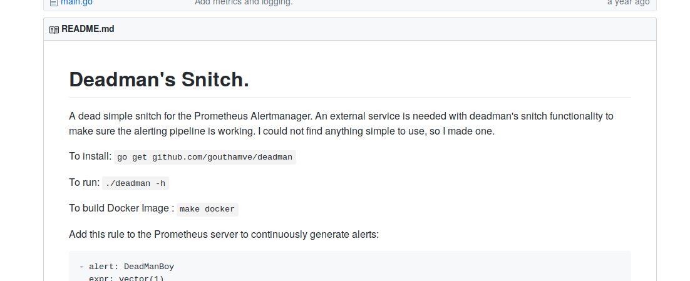

https://github.com/gouthamve/deadman

"encoding/json"
"net/http"
"path/filepath"
"log/level"
"prometheus"
"errors"
"...prometheus/promhttp"
"...promlog"
kingpin "gopkg.in/alecthomas/kingpin.v2"
extern crate slog;
extern crate chan;
extern crate futures;
extern crate hyper;
extern crate mime;
extern crate lazy_static;
extern crate prometheus;
extern crate tokio;
extern crate serde_derive;
extern crate serde_json;
extern crate clap;
extern crate deadman;
extern crate humantime;
extern crate slog;
extern crate slog_async;
extern crate slog_term;
use futures::future::Loop;
use futures::future::LoopFn;
use futures::future::{err, ok, Future};
use hyper::header::{HeaderValue, CONTENT_TYPE};
use hyper::service::service_fn_ok;
use hyper::{Body, Method, Response, Server, StatusCode};
use tokio::prelude::FutureExt;
use mime::Mime;
use slog::Level;
use slog::Logger;
use slog::Drain;
use slog::LevelFilter;
use clap::{App, Arg};
use humantime::parse_duration;
use slog::Level;
use slog::Logger;
use prometheus::{Counter, Encoder, TextEncoder};
for {
select {
case <-d.ticker.C:
ticksTotal.Inc()
if !skip {
ticksNotified.Inc()
...
}
skip = false
case <-d.pinger:
skip = true
}
}
futures::future::loop_fn(first, move |first| {
if first {
return ok(Continue(false))
}
chan_select! {
ticker.recv() => {
...
},
pinger.recv() => {
...
}
};
if exit {
ok(Break(false))
} else {
ok(Continue(false))
}
})
pinger := make(chan time.Time)
d, err := NewDeadMan(
pinger,
time.Duration(cfg.interval),
cfg.amURL,
log.With(logger, "component", "deadman")
)
go http.ListenAndServe(
":9095", nil)
let mut deadman = Deadman::new(
cfg.interval,
notifier,
logger,
cfg.service_name
);
run(hyper::rt::lazy(move || {
spawn(deadman.start());
spawn(deadman.serve());
spawn(deadman.serve_status());
Ok(())
}));
alerts := []*model.Alert{{
Labels: model.LabelSet{
model.LabelName("alertname"):
model.LabelValue("DeadmanDead"),
},
}}
b, err := json.Marshal(alerts)
return func() error {
client := &http.Client{}
resp, err := client.Post(
amURL,
"application/json",
bytes.NewReader(b)
)
...
return nil
let connector = HttpConnector::new(1);
let client = Client::builder().build(connector);
let uri: Uri = alertmanager_url.parse().unwrap();
let mut alert_labels = serde_json::Map::new();
alert_labels.insert(
"alertname".to_string(),
json!("DeadmanDead"));
...
let req = hyper::Request::builder()
.method(Method::POST)
.uri(uri)
.header(CONTENT_TYPE, HeaderValue::from_static("application/json"))
.body(Body::from(body))
.unwrap();
let fut = client
.request(req)
hyper::rt::spawn(fut);
Ok(())
ticksTotal = prometheus.NewCounter(
prometheus.CounterOpts{
Name: "deadman_ticks_total",
Help: "The total ticks passed in this snitch",
},
)
...
prometheus.MustRegister(
ticksTotal,
ticksNotified,
failedNotifications,
)
lazy_static! {
static ref PROM_TICKS_TOTAL: Counter =
register_counter!(opts!(
"deadman_ticks_total",
"The total ticks passed in this snitch",
labels! {"handler" => "all",}
))
.unwrap();
...
}
app := kingpin.New(filepath.Base(os.Args[0]),
"A deadman's snitch for Prometheus Alertmanager compatible notifications.")
app.HelpFlag.Short('h')
app.Flag("am.url", "The URL to POST alerts to.").
Default("http://localhost:9093/api/v1/alerts").StringVar(&cfg.amURL)
app.Flag("deadman.interval", "The heartbeat interval. An alert is sent if no heartbeat is sent.").
Default("30s").SetValue(&cfg.interval)
promlogflag.AddFlags(app,
&cfg.promlogConfig)
let matches = App::new("Deadman Rust")
...
.arg(
Arg::with_name("alertmanager-url")
.long("am.url")
.value_name("URL")
.help("The URL to POST alerts to.")
.default_value("http://localhost:9093/api/v1/alerts")
.takes_value(true),
)
.get_matches();
let am_url = matches.value_of(
"alertmanager-url"
)
.unwrap().to_string();
...
logger := promlog.New(
&cfg.promlogConfig)
let decorator = slog_term::
TermDecorator::new().build();
let drain = slog_term::
FullFormat::new(decorator)
.build().fuse();
let drain = slog_async::
Async::new(drain).build().fuse();
let drain = LevelFilter::new(
drain, log_level).fuse();
Feb 12 ... DEBG [starting event loop]
Feb 12 ... DEBG [spawning counter]
Feb 12 ... DEBG Starting loop...
Feb 12 ... DEBG Interval: 600s
Feb 12 ... DEBG [spawning serve]
Feb 12 ... DEBG [spawning status serve]
Feb 12 ... DEBG [spawns complete]
Feb 12 ... DEBG ==>
Feb 12 ... DEBG Received liveness check [status]
Feb 12 ... DEBG ==>
$ docker run --entrypoint /bin/bash \
--rm -it -v "$(pwd)":/home/rust/src ekidd/rust-musl-builder
[sh]$ cargo build --release
FROM scratch
ADD ./deadman/target/x86_64-unknown-linux-musl/release/deadman /
EXPOSE 9095
ENTRYPOINT ["/deadman"]
$ docker images
flaxandteal/deadman experimental 5593973a2037 11.8MB
- name: {{ .Chart.Name }}
image: "{{ .Values.image.repository }}:{{ .Values.image.tag }}"
imagePullPolicy: {{ .Values.image.pullPolicy }}
command:
- /deadman
- --am.url={{ .Values.alertmanagerUrl }}
- --deadman.interval={{- .Values.interval -}}s
- --deadman.service="{{- .Values.serviceName }}"
- --log.level={{- .Values.logLevel }}
ports:
- name: http-alive
containerPort: 9095
protocol: TCP
- name: http-status
containerPort: 8080
protocol: TCP
livenessProbe:
httpGet:
path: /healthz
port: http-status
readinessProbe:
httpGet:
path: /healthz
port: http-status
[values.yaml]
...
alertmanagerUrl: "http://alertmanager-operated.srv-monitoring.svc.cluster.local:9093/api/v1/alerts"
interval: 600 # seconds
logLevel: "debug"
serviceName: "my-service @philtweir"